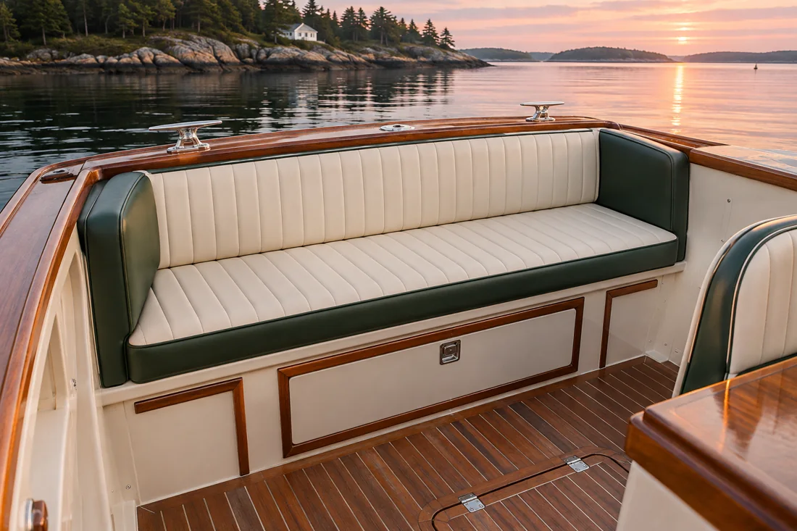
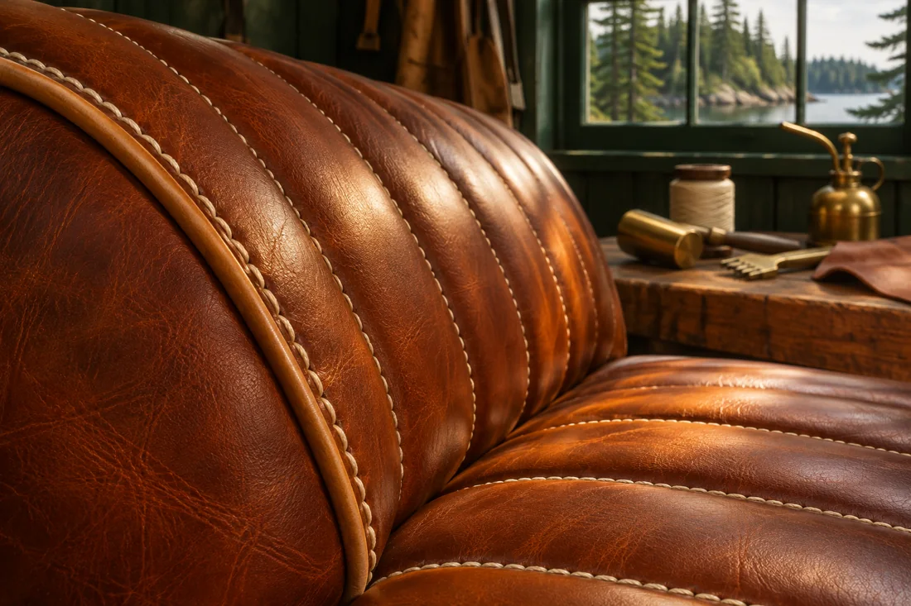

Boat interiors
Cabin and cockpit seating
Look at the seams on the long bench and how the cushions fit against the boat’s curves.
What this service coversWork
These images illustrate upholstery details to look for. They are not photographs of Coastal Upholstery’s past jobs.

Boat interiors
Look at the seams on the long bench and how the cushions fit against the boat’s curves.
What this service covers
Antique auto
Notice the panel lines and the way seams follow the shape of the original seat.
What this service covers
Leather & stitching
Look at the edges and the stitch spacing. They’re the small details you see every time you sit down.
What this service covers
Commercial seating
Look at the seat sections and panel breaks. For a real enquiry, note how many pieces are worn.
What this service coversDescribe yours and add a photo in the demo form.